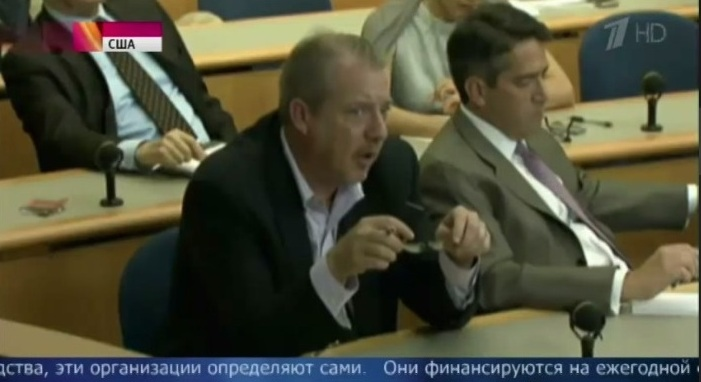

Первый канал неправильно перевел слова Джен Псаки, чтобы обвинить США в финансировании революции в Гонконге
15 октября в программе «Новости» на Первом канале показали отрывок с брифинга представителя Госдепа США Джен Псаки, на котором она якобы призналась, что США финансировали революцию в Гонконге, якобы положительно ответив на соответствующий вопрос журналиста.
Как следует из сюжета, правительство США не оказывало прямой поддержки протестующим, однако указывало общественным организациям, на что именно следует потратить полученные от исполнительной власти США деньги.
https://www.youtube.com/watch?v=t-z89A1VIAw#t=720
Новость Первого канала активно разошлась по соцсетям и другим сайтам.
На самом деле это не так.На Первом канале неправильно перевели слова Джен Псаки, сказанные ею в ответ на вопрос журналиста Мэтью Ли.
Журналист Мэтью Ли задал ей несколько вопросов о финансировании Америкой общественных организаций в Гонконге.Вот вариант перевода Первого канала на последний вопрос по этой теме: Журналист Мэтью Ли: — Правительство США, исполнительная власть в случае с Гонконгом указывала или нет каким-либо организациям, как следует потратить выделенные деньги?Джен Псаки : — Да, так работает система финансирования.
В оригинале вопрос и ответ звучит так: Журналист Мэтью Ли: — So there was – so the U.S. Government writ large, in terms of the Executive Branch, had – doesn’t and did not, in this case with Hong Kong, tell any group what it wanted to see done with its money?Джен Псаки: — That’s how the funding works, so yes.Расшифровку всего 44 минутного брифинга можно прочесть на сайте Госдепа.
Перевод на русский: Журналист Мэтью Ли: — Так было — так правительство США , как исполнительная власть, в данном случае с Гонконгом, не говорит и не говорило каким-либо группам, что следует сделать с его деньгами?Джен Псаки: — Вот как финансирование работает, так что да [не говорит и не говорило].То есть «Да» прозвучало в ответ на вопрос, что США «не говорили и не говорят, что делать с деньгами».

Если сравнить оригинальную видеозапись брифинга Джен Псаки на youtube, которая длится 44 минуты (ее выложили U.S. Department of State) с сюжетом на Первом канале, можно заметить особенности монтажа Первого канала.Из этих 44 минут они выбрали два кадра с удивленным журналистом и его смеющимися коллегами, чтобы продемонстрировать реакцию других людей на слова Псаки.Тем самим они показывают, что якобы даже американские журналисты удивились и улыбались, когда услышали ее ответ.Но в оригинальном видео никто в этот момент не удивлялся и не улыбался.
Кстати, вот рядом с Мэтью Ли, который задает вопросы и постоянно крутит свои очки в руках, сидит журналист.
Вот этот журналист удивляется, и в это же время можно заметить, как в нижнем левом углу видно, как Метью Ли сидит в очках.Но когда он задавал вопросы и слушал ответы на них, очки у него были в руках.
Та же ситуация — с журналистами, которые улыбаются, но не во время этого ответа.
Stopfake.org опровергает новости, которые касаются событий в Украине.На первый взгляд, революция в Гонконге и вопросы финансирования Америкой гонконгских организаций не касаются Украины.Но с помощью рупора Кремля — Первого канала — сам Кремль рассказывает, что США финансируют все революции, в том числе и в Гонконге, и в Украине.
Posted On: 2014-10-18T21:00:00
Content Date: 2014-10-18
Download Date: 2021-07-16
Document ID: L0C04FHCQ